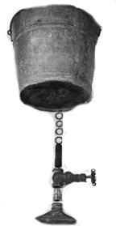

Folks who strike out into the wilderness where running water is unknown quickly discover that every cupful must be put to many tasks before its final return to nature. Under such conditions, just keeping clean becomes a problem and a simple shower can be the height of luxury.
With our own water supply hauled in from seven miles away, we had to figure a way to make every drop work double. That's the idea behind our homemade shower: The design we worked out gives us a satisfying wash from less than three gallons and also catches those three gallons to be recycled for other important jobs.
The basic equipment is as inexpensive (or even cost-free) as your scrounging can make it. You'll need the following:
1 pail, without holes, approximately 16 quarts (often found at dumps)
1 piece of half-inch pipe, about four inches long, threaded on both ends
2 half-inch electrical conduit nuts
2 hose washers
1 adapter with two threaded male ends
1 half-inch valve (we used a gate valve, but any other type will do)
1 watering can or hose sprinkler head
1 small pulley wheel
1 wall hook
1 12-foot length of rope or clothesline
2 tenpenny nails
1 tub or something similar to catch the water
In the middle of the pail's bottom, make a hole large enough to take the half-inch pipe. Place one of the electrical conduit nuts on one end of the pipe, add a hose washer next to it and insert the pipe into the hole in the bucket so that the fittings are close to the container. The second hose washer goes on the short end inside the pail, followed by the second electrical conduit nut, which is then cinched down against the washer to form a tight seal.
Next, screw one end of the valve onto the lower end of the pipe and insert the adapter firmly into the other opening. Attach the shower head to the free end of the adapter.
The final step is the mounting of your shower. Tie one end of the rope to the handle of the bucket, and make sure the knot is good! Even this small amount of water will be heavy. Fasten the wall hook to a firm overhead structure such as a beam, attach the pulley and run the rope through. Drive the two nails into the wall at a convenient height and far enough apart to let you secure the free end of the cord with a figure-eight hitch.
The advantage of the pulley arrangement is that a woman or sturdy child can handle the full pail safely and without using a stepladder. In addition, the height of the shower can be adjusted to the height of the user. If you prefer, however, you can omit the rope and hang the bucket on a strong screw hook fastened to an overhead beam.
To prepare for a shower just heat water, lower the pail, partly fill it with hot water and add cold to adjust the temperature. Then haul the bucket to the desired height if you opted for the deluxe adjustable model-and fasten the rope to the holder on the wall. The flow is regulated with the valve. A water saving tip: Wet yourself down and shut off the spray while you soap and scrub. Then turn on the shower for a rinse.
To recycle the used liquid, catch it in a tub or pan and save it to scrub floors, refresh plants, soak clothes or whatever your needs dictate. Homesteaders who shower outdoors-and aren't all that hard up for water-can eliminate the container and provide drainage with an eight to twelve inch base of smooth stones laid on the ground.
Hope you enjoy your shower. That squeaky-clean feeling is great!
Copyright 2001-2002, Ogden Publications, Inc.
All rights reserved.
|
|
 |
|